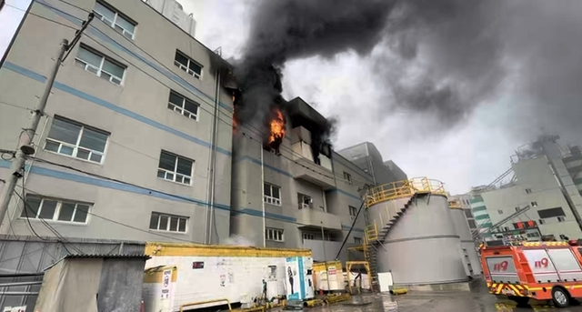

경기 부천의 한 도장공장에서 불이 나 소방당국이 대응 2단계를 발령하고 진화 작업을 벌이던 중 소방관 3명이 다쳤다. 특히, 이 중 1명은 심정지 상태로 병원에 이송됐다.
이 불로 공장 안에 있던 1명이 소방대에 구조됐고 4명은 스스로 대피했다.
현장에는 소방 인력 80명과 장비 38대가 투입돼 진화 작업을 벌이고 있었다.

경기 부천의 한 도장공장에서 불이 나 소방당국이 대응 2단계를 발령하고 진화 작업을 벌이던 중 소방관 3명이 다쳤다. 특히, 이 중 1명은 심정지 상태로 병원에 이송됐다.
이 불로 공장 안에 있던 1명이 소방대에 구조됐고 4명은 스스로 대피했다.
현장에는 소방 인력 80명과 장비 38대가 투입돼 진화 작업을 벌이고 있었다.
뭐라는거냐넌
진짜 어떠한 생각을 통해 소방장 중처법 적용되냐고 댓글을 달았는지 궁금합니다.
어그로끌고싶었다
사회적 지능이 모자라는건가
아 밥먹음서 티비로 대충봤는데 도장공장이였음? 도료있는곳이면 피해심하긴 하겠네..;
하.. 자의로 못나오신거구나.. 기적이 일어나길
내 사수 저기 배송가야하는데 못간다고 하더라
아... 부디 기적이 일어나길...ㅜㅜ